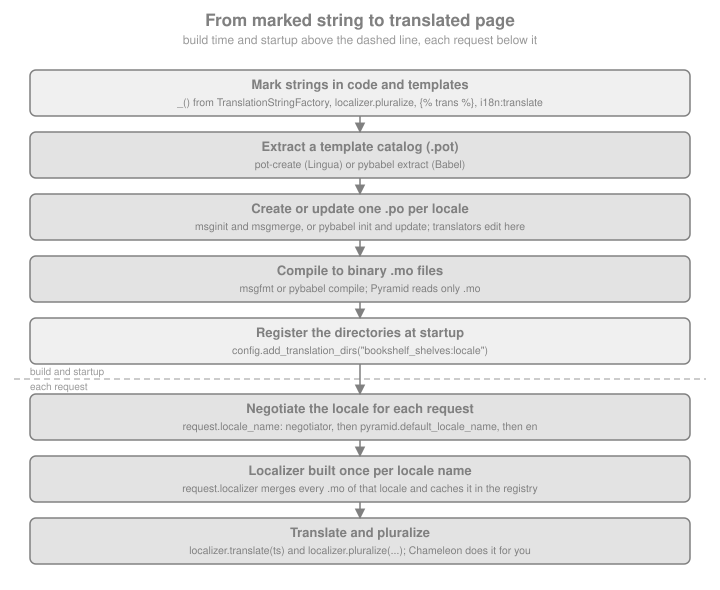

Internationalization
|
This content was generated with the assistance of AI and should be verified against the official documentation before being relied on in production. |
This page is written against Pyramid 2.1 (released 2026-03-11), translationstring 1.4, Lingua 4.16.2, Babel 2.18.0, pyramid_jinja2 2.10.1 and pyramid_chameleon 0.3, checked on 2026-10-07. Pyramid 2.1 supports Python 3.10 to 3.14; the examples were executed on Python 3.13 with WebTest 3.0.7 and WebOb 1.8.11. The running scenario is Bookshelf Shelves: public shelves owned by users, each holding books. This page makes the shelf pages speak more than one language.
Internationalization (i18n) is writing software so that its user interface can be shown in several languages;
localization (l10n) is showing it in one particular language or cultural convention. Pyramid’s part of the work is
small and deliberate. It defines a translation string, a lazy str that remembers its message id, domain, default
text and interpolation values; it reads gettext .mo catalogs from the directories you register; it decides which
locale a request wants through a replaceable locale negotiator; and it hands you a Localizer that translates and
pluralizes for that locale. Everything else is delegated: extracting messages is done by Lingua, Babel or GNU gettext;
dates, numbers and currencies are formatted by Babel; Chameleon translates translation strings on its own, and Jinja2
reaches the localizer through pyramid_jinja2. By default a Pyramid application performs no translation: it starts
translating only once you register at least one translation directory and the locale is set correctly.
The same job is done elsewhere on this site by Flask-Babel
(Internationalization with Flask-Babel), by
tornado.locale (Localization) and by Django’s built-in machinery
(Internationalization and Translation). The gettext catalog
formats are shared by all of them, which is why a translator’s .po files move easily between frameworks.
From Marked String to Translated Page
A translation travels through a fixed pipeline. At build time, strings in code and templates are marked, extracted into
a .pot template, merged into one .po file per locale that translators edit, and compiled into binary .mo files.
At startup the application registers the directory that contains the compiled catalogs. On each request the locale
negotiator picks a locale name, Pyramid builds (and caches) a Localizer for it from the registered catalogs, and your
code or template asks the localizer for a translation.

Three libraries do the work underneath. The translationstring package (a dependency of Pyramid) supplies
TranslationString, TranslationStringFactory, the Translator and the Pluralizer that Pyramid re-exports from
pyramid.i18n. The standard library’s gettext.GNUTranslations reads the .mo files; Pyramid wraps it in its own
Translations class (the code was adapted from Babel) so that several catalogs, one per domain, can be merged. The
catalog files themselves are produced by external tools, and Pyramid ignores .po files completely: if you edit a
.po file and forget to compile it, nothing changes.
Translation Strings
A translation string is an object that behaves like a str but carries the metadata the translation machinery needs.
The most primitive way to create one is pyramid.i18n.TranslationString; the idiomatic way is a
TranslationStringFactory, which presets the domain and is conventionally bound to the name _, the name that
extraction tools look for.
| Part | Meaning |
|---|---|
|
The first argument: the key looked up in the catalog. It is also what |
|
Text used when no translation is found. When it is |
|
Values for replacement markers written |
|
The translation category, which selects the catalog file: domain |
from pyramid.i18n import TranslationString, TranslationStringFactory
_ = TranslationStringFactory("bookshelf")
title = _("shelf-title", default="Shelf: ${name}", mapping={"name": "Fiction"})
plain = _("Add a book")
print(type(title).__name__, title.domain, title.mapping)
print(repr(str(title)), title == "shelf-title")
print(title.interpolate(), "|", plain.interpolate())TranslationString bookshelf {'name': 'Fiction'}
'shelf-title' True
Shelf: Fiction | Add a book
Giving every package its own domain, through its own factory, is the documented best practice: another application can
then reuse your package and simply include your translation directory without merging its catalogs with its own. The
convention for a project named bookshelf_shelves is a single module that defines the factory once, for example
_ = TranslationStringFactory("bookshelf"), and imports it everywhere.
A translation string is lazy. Creating it costs nothing and requires no request, so it is safe in module-level
constants, class attributes, form definitions or schema nodes, where no locale exists yet. It is translated only when
something passes it to a localizer or to a renderer that knows how. Until then str(title) is the untranslated
msgid (shelf-title above), and that is the first pitfall: json.dumps, an f-string or a Jinja2 {{ title }}
prints the message id. A renderer that is not aware of translation strings (the built-in JSON renderer is one) needs
the string translated by request.localizer.translate(...) first.
Message Catalogs: pot, po and mo
GNU gettext uses three file types. A .pot (portable object template) lists every message id found in the source and
is regenerated at will. A .po file (portable object) is a copy of the template with a translation per message for
one locale; humans edit it, with a text editor or a tool such as Poedit, and it is committed to version control. A
.mo (machine object) file is the compiled, binary form that Pyramid reads. Catalogs live in a translation
directory with one folder per locale and a fixed LC_MESSAGES subfolder, one file per domain:
bookshelf_shelves/locale/
bookshelf.pot template, regenerated
es/LC_MESSAGES/bookshelf.po translated by humans
es/LC_MESSAGES/bookshelf.mo compiled, read by Pyramid
de/LC_MESSAGES/bookshelf.po
de/LC_MESSAGES/bookshelf.moTwo toolchains produce these files, and the official Pyramid chapter documents the first. Both extract the same marks
(_("..."), _("...", default="...")), so choose by what else you need to extract.
| Step | Lingua and GNU gettext (the Pyramid chapter) | Babel (pybabel) |
|---|---|---|
Install |
|
|
Extract |
|
|
Create a locale |
|
|
Update after changes |
|
|
Compile |
|
|
With Lingua and GNU gettext the whole cycle for the shelves project is:
pip install lingua # plus the OS package "gettext" for msginit, msgmerge and msgfmt
# 1. extract every _() mark into a template
mkdir -p bookshelf_shelves/locale
pot-create -o bookshelf_shelves/locale/bookshelf.pot bookshelf_shelves
# 2. create the Spanish catalog the first time
cd bookshelf_shelves/locale
mkdir -p es/LC_MESSAGES
msginit --no-translator -l es -i bookshelf.pot -o es/LC_MESSAGES/bookshelf.po
# 3. later, after re-running pot-create, merge new and changed messages
msgmerge --update --backup=none es/LC_MESSAGES/bookshelf.po bookshelf.pot
# 4. translate es/LC_MESSAGES/bookshelf.po, then compile it
msgfmt --check -o es/LC_MESSAGES/bookshelf.mo es/LC_MESSAGES/bookshelf.popot-create also writes the default text of a message that has one into a #. Default: comment above the entry, so the
translator sees Shelf: ${name} next to the opaque id shelf-title. Without --backup=none, msgmerge --update
leaves a bookshelf.po~ backup next to the catalog, which you do not want committed. Plural calls are not extracted by
default because Lingua does not know the name pluralize; add it with -k pluralize:1,2 (singular is argument 1,
plural argument 2).
The Babel route needs a small mapping file, babel.cfg, that assigns an extractor to each glob, because it is the one
that can read Jinja2 templates:
[python: bookshelf_shelves/**.py]
[jinja2: bookshelf_shelves/templates/**.jinja2]pip install Babel
mkdir -p bookshelf_shelves/locale # pybabel extract does not create the folder
pybabel extract -F babel.cfg -k pluralize:1,2 -o bookshelf_shelves/locale/bookshelf.pot .
pybabel init -i bookshelf_shelves/locale/bookshelf.pot -d bookshelf_shelves/locale -D bookshelf -l es
pybabel update -i bookshelf_shelves/locale/bookshelf.pot -d bookshelf_shelves/locale -D bookshelf
pybabel compile -d bookshelf_shelves/locale -D bookshelf --statisticsSource: Babel: Command-Line Interface
Two details decide whether a translation reaches the user. The -D bookshelf domain must equal the domain of the
factory, because the file name bookshelf.mo is the domain. And pybabel compile and msgfmt skip entries marked
#, fuzzy (a guess made by msgmerge or pybabel update when an id changed slightly) until a human reviews the
guess and removes the flag; the catalog compiles, the message silently stays in English. pybabel compile -f or
msgfmt with fuzzy handling options override that, which is rarely a good idea.
The commands above are shown for the shell and not executed by the examples that follow. To keep every example
runnable and self-contained, they build a small catalog from an inline .po text with Babel’s own read_po and
write_mo, the Python equivalent of pybabel compile. A real project commits its .po files and compiles them in the
build.
import io
import tempfile
from pathlib import Path
from babel.messages.mofile import write_mo
from babel.messages.pofile import read_po
HEADER = """\
msgid ""
msgstr ""
"Content-Type: text/plain; charset=UTF-8\\n"
"Plural-Forms: {plural};\\n"
"""
BOOKSHELF_ES = HEADER.format(plural="nplurals=2; plural=(n != 1)") + """
msgid "shelf-title"
msgstr "Estantería: ${name}"
msgid "Add a book"
msgstr "Añadir un libro"
msgid "${n} book"
msgid_plural "${n} books"
msgstr[0] "${n} libro"
msgstr[1] "${n} libros"
msgid "Shelf owned by %(name)s"
msgstr "Estantería de %(name)s"
msgid "%(count)s book"
msgid_plural "%(count)s books"
msgstr[0] "%(count)s libro"
msgstr[1] "%(count)s libros"
"""
# a second domain with three plural forms, taken from the Pyramid chapter
INVENTORY_ES = HEADER.format(plural="nplurals=3; plural=n==0 ? 0 : n==1 ? 1 : 2") + """
msgid "item_plural"
msgid_plural ""
msgstr[0] "Sin ejemplares"
msgstr[1] "${number} ejemplar"
msgstr[2] "${number} ejemplares"
"""
def compile_po(po_text, locale_dir, locale, domain):
"""Compile an inline .po text to locale_dir/<locale>/LC_MESSAGES/<domain>.mo."""
messages = Path(locale_dir) / locale / "LC_MESSAGES"
messages.mkdir(parents=True, exist_ok=True)
catalog = read_po(io.StringIO(po_text), locale=locale, domain=domain)
with open(messages / f"{domain}.mo", "wb") as fp:
write_mo(fp, catalog)
locale_dir = Path(tempfile.mkdtemp(prefix="shelves-locale-"))
compile_po(BOOKSHELF_ES, locale_dir, "es", "bookshelf")
compile_po(INVENTORY_ES, locale_dir, "es", "inventory")
print(sorted(p.relative_to(locale_dir).as_posix() for p in locale_dir.rglob("*.mo")))['es/LC_MESSAGES/bookshelf.mo', 'es/LC_MESSAGES/inventory.mo']
Activating Translation
Two things must be true before anything is translated: a translation directory is registered and the request’s locale
name is set. config.add_translation_dirs registers directories, given either as absolute paths or as asset
specifications (package:folder), so that the catalogs travel with the installed package.
from pyramid.config import Configurator
from pyramid.i18n import TranslationStringFactory
from pyramid.response import Response
from webtest import TestApp
_ = TranslationStringFactory("bookshelf")
def shelf(request):
localizer = request.localizer
title = localizer.translate(
_("shelf-title", default="Shelf: ${name}", mapping={"name": "Ficción"})
)
n = int(request.params.get("n", 1))
count = localizer.pluralize(
"${n} book", "${n} books", n, domain="bookshelf", mapping={"n": n}
)
button = localizer.translate(_("Add a book"))
return Response(
f"{request.locale_name} | {title} | {count} | {button}",
content_type="text/plain",
)
with Configurator(settings={"pyramid.default_locale_name": "en"}) as config:
config.add_translation_dirs(str(locale_dir))
# in a project: config.add_translation_dirs("bookshelf_shelves:locale")
config.add_route("shelf", "/shelf")
config.add_view(shelf, route_name="shelf")
app = TestApp(config.make_wsgi_app())
print(app.get("/shelf").text)
print(app.get("/shelf", {"_LOCALE_": "es", "n": 3}).text)en | Shelf: Ficción | 1 book | Add a book es | Estantería: Ficción | 3 libros | Añadir un libro
The English request found no catalog at all, so each message is returned as its default text: a missing translation is
never an error, which is why you do not need an English .mo when the source strings are English. Behind the scenes
request.localizer is created by pyramid.i18n.make_localizer, which walks the registered directories for the folders
named after the locale (and, for a name such as es_ES, first for es), reads every .mo it finds there and merges
them, one Translations object per domain. The finished Localizer is registered as a utility in the application
registry under the locale name, so the .mo files are read once per locale and process. Consequently a catalog
compiled while the application is running is not picked up until the process restarts.
| API | Behaviour |
|---|---|
|
The |
|
The negotiated locale name. Computed once per request on first access and then stored on the request. |
|
Runs the negotiator again, bypassing the value stored on the request. It reads |
|
Translates a translation string or a plain string and interpolates |
|
Chooses the plural form for |
|
The locale name this localizer was made for; the same value as |
|
Builds a localizer without a request, for scripts, background jobs and e-mail. |
Source: Pyramid: pyramid.i18n API
pyramid.i18n.get_localizer(request) and get_locale_name(request) still exist but have been deprecated since Pyramid
1.5; use the request attributes. The l*gettext methods of the translations class were removed in Pyramid 2.1, because
Python removed them from gettext in 3.11.
Directory Order and Overriding Third-Party Catalogs
Libraries that Pyramid applications use ship their own catalogs: Colander and Deform register their messages in the
colander and deform domains (the forms page of this section, see
Forms with Deform and Colander, wires them in). When two
directories hold the same domain and message in the same locale, the one registered first wins by default; a later
call is trumped by earlier ones unless it passes override=True. Inside a single call the opposite holds: later items
beat earlier ones.
import tempfile
from pathlib import Path
from pyramid.request import Request
def tiny_catalog(label):
folder = Path(tempfile.mkdtemp(prefix=f"loc-{label}-"))
compile_po(
HEADER.format(plural="nplurals=2; plural=(n != 1)")
+ f'\nmsgid "Hello"\nmsgstr "Hola {label}"\n',
folder, "es", "bookshelf",
)
return str(folder)
first, second = tiny_catalog("first"), tiny_catalog("second")
for kwargs in ({}, {"override": True}):
with Configurator() as config:
config.add_translation_dirs(first)
config.add_translation_dirs(second, **kwargs)
request = Request.blank("/?_LOCALE_=es")
request.registry = config.registry
print(kwargs, request.localizer.translate("Hello", domain="bookshelf")){} Hola first
{'override': True} Hola second
To fix a wrong Spanish message in Colander, copy that one entry into your own colander.po, compile it into your
directory and register your directory before colander:locale or with override=True. A custom catalog directory
that merges into an existing domain does not need to be complete; missing messages fall through to the other
directories.
The Default Locale Name
The setting pyramid.default_locale_name is the locale used when the negotiator returns None. It defaults to en.
It can be passed to the Configurator, as in the example above, written in the .ini file or set through the
PYRAMID_DEFAULT_LOCALE_NAME environment variable (see
Settings, Environment and ini Files):
[app:main]
use = egg:bookshelf_shelves
pyramid.default_locale_name = esSource: Pyramid: Default Locale Name
The value applies to a request whose negotiator found nothing; it does not restrict the locales a negotiator may return and it is not the list of languages your application offers.
Pluralization
English has two plural forms, but Polish has three, Arabic six and Japanese one. gettext solves this with a
Plural-Forms header in the catalog that holds the number of forms and an expression that maps a count to the form
index. localizer.pluralize evaluates it for n; msginit and pybabel init write the header for the locale, and
you write it yourself only when you invent a catalog by hand. The expression lives in the catalog header, so it
differs per domain and per locale.
There are two ways to call pluralize, and mixing them up is the commonest mistake:
-
Source text as ids.
pluralize("${n} book", "${n} books", n, ...): singular and plural are English texts and both are the msgid pair in the.pofile (msgidandmsgid_plural). With no catalog the call falls back to ordinary English rules, so it works in the source language without a catalog. -
Opaque ids.
pluralize("item_plural", "", n, ...): the first argument is a message id defined only in the catalogs, and the second argument is ignored. Every locale, including English, needs a catalog that defines the message, because there is no text to fall back to.
def items(localizer, n):
return localizer.pluralize(
"item_plural", "", n, domain="inventory", mapping={"number": n}
)
def books(localizer, n):
return localizer.pluralize(
"${n} book", "${n} books", n, domain="bookshelf", mapping={"n": n}
)
with Configurator(settings={"pyramid.default_locale_name": "en"}) as config:
config.add_translation_dirs(str(locale_dir))
registry = config.registry
for locale in ("es", "en"):
request = Request.blank(f"/?_LOCALE_={locale}")
request.registry = registry
loc = request.localizer
print(locale, [items(loc, n) for n in (0, 1, 5)], [books(loc, n) for n in (1, 2)])es ['Sin ejemplares', '1 ejemplar', '5 ejemplares'] ['1 libro', '2 libros']
en ['item_plural', 'item_plural', '${number} items'] ['1 book', '2 books']
The English row shows the opaque-id trap: with no English catalog the call returns the raw id item_plural for
n equal to 0 and 1 and the (uninterpolated) plural text for other numbers, the gettext fallback. Either ship an
English .mo for opaque ids or use source text as ids, which is also easier for translators to read. The ${number}
in the output was not interpolated because the fallback path returns the second argument verbatim, which was empty here
and replaced by the lookup’s own text; use real source text to avoid the problem. The gettext manual explains the
Plural-Forms expressions per language.
Locale Negotiation
The locale negotiator is a callable that receives the request and returns a locale name or None. It is consulted
the first time request.locale_name or request.localizer is used, or whenever negotiate_locale_name is called.
Exactly one negotiator is active; a later registration replaces the earlier one. If it returns None, Pyramid uses
pyramid.default_locale_name, and en if that is not set either.
The Default Negotiator
pyramid.i18n.default_locale_negotiator needs no configuration. It looks, in this order, at the attribute
request._LOCALE_, the request parameter _LOCALE_ (query string or form body), and the cookie _LOCALE_, and
returns the first non-None value.
The default negotiator does not read the Accept-Language header, does not look at the URL and does not check that
the value is a language you support. The first two limitations are fixed by a custom negotiator; the third is a
security issue explained next.
Validate What the Negotiator Returns
The locale name is user input. With the default negotiator any request can send ?_LOCALE_=anything, and Pyramid
accepts it: it builds a Localizer for that exact string and registers it in the application registry, where it stays
for the life of the process. A client that varies the value therefore grows the registry without bound, and the name
also flows into request.locale_name, <html lang>, Babel’s Locale.parse (which raises UnknownLocaleError for
an unknown language, a 500) and, through make_localizer, into a file system path os.path.join(directory, name)
(Pyramid resolves it with realpath and only reads .mo files below an LC_MESSAGES folder, but a name should never
steer a path).
from pyramid.interfaces import ILocalizer
def localizer_count(registry):
return len(list(registry.getUtilitiesFor(ILocalizer)))
with Configurator() as config:
config.add_translation_dirs(str(locale_dir))
config.add_route("shelf", "/shelf")
config.add_view(shelf, route_name="shelf")
open_app = TestApp(config.make_wsgi_app())
print("localizers before:", localizer_count(config.registry))
for i in range(5):
open_app.get("/shelf", {"_LOCALE_": f"junk{i}"})
print("localizers after five junk locales:", localizer_count(config.registry))localizers before: 0 localizers after five junk locales: 5
Pyramid deliberately has no API for "the languages available". The documentation explains why: the languages a deployment supports are a product decision, independent of which translation files happen to be on disk, because translations may exist but be incomplete or cover only some domains. The application owns the list, and the suggested way is a setting that a deployer can edit.
A Custom Negotiator
The negotiator below implements the policy most sites want: an explicit language in the URL first (/es/shelf), then a
language the user chose earlier and stored in a cookie, then the browser’s Accept-Language, then the default. Every
candidate is checked against the available_languages setting before it is returned, so the registry can never see
anything else.
from pyramid.settings import aslist
def negotiator(request):
settings = request.registry.settings
available = aslist(settings["available_languages"])
# matchdict is None until a route has matched (for example in a NewRequest subscriber)
candidates = [
(request.matchdict or {}).get("lang"),
request.cookies.get("lang"),
]
for candidate in candidates:
if candidate in available:
return candidate
# RFC 4647 lookup; WebOb needs a default and does not accept None
return request.accept_language.lookup(
available, default=settings["pyramid.default_locale_name"]
)
def switch(request):
language = request.matchdict["lang"]
response = Response(f"switched to {request.locale_name}", content_type="text/plain")
response.set_cookie("lang", language, max_age=31536000, samesite="Lax")
response.vary = ("Accept-Language", "Cookie")
response.content_language = request.locale_name
return response
settings = {
"available_languages": "en es",
"pyramid.default_locale_name": "en",
}
with Configurator(settings=settings, locale_negotiator=negotiator) as config:
config.add_translation_dirs(str(locale_dir))
config.add_route("prefixed", "/{lang}/shelf")
config.add_route("switch", "/language/{lang}")
config.add_route("plain", "/shelf")
config.add_view(shelf, route_name="prefixed")
config.add_view(shelf, route_name="plain")
config.add_view(switch, route_name="switch")
nego_app = TestApp(config.make_wsgi_app())
checks = [
("/es/shelf", {}),
("/fr/shelf", {}),
("/shelf", {"Accept-Language": "es-MX,es;q=0.8,en;q=0.5"}),
("/shelf", {"Accept-Language": "de, fr;q=0.5"}),
("/shelf", {}),
]
for path, headers in checks:
print(path, headers.get("Accept-Language", "-"), "->", nego_app.get(path, headers=headers).text)/es/shelf - -> es | Estantería: Ficción | 1 libro | Añadir un libro /fr/shelf - -> en | Shelf: Ficción | 1 book | Add a book /shelf es-MX,es;q=0.8,en;q=0.5 -> es | Estantería: Ficción | 1 libro | Añadir un libro /shelf de, fr;q=0.5 -> en | Shelf: Ficción | 1 book | Add a book /shelf - -> en | Shelf: Ficción | 1 book | Add a book
The registration can be written three ways, all equivalent: the locale_negotiator= argument of Configurator, as
above, config.set_locale_negotiator(negotiator), or a dotted name of either. Notes on the code:
-
request.accept_language.lookup(...)is WebOb’s RFC 4647 lookup: it tries the language ranges in the header in order of quality and truncates a regional tag (es-MX) to match an availablees. The olderbest_matchmethod is deprecated in WebOb 1.8 and warns; the pyramid_jinja2 documentation example still uses it. -
A language switcher is a route that sets the cookie.
samesite="Lax"keeps the cookie off cross-site subrequests; it holds no secret, so it does not needhttponly, but nothing reads it from JavaScript either. -
Vary: Accept-Language, Cookietells shared caches that the body depends on both;Content-Languagerecords which language the body is in. A page that is cached withoutVaryshows the wrong language to the next visitor. Static assets are not affected.
Use request.matchdict carefully: it only exists once the router has matched a route, so a negotiator that runs earlier
(for instance from a NewRequest subscriber that touches request.localizer) must treat it as optional, as above.
Setting the Locale Without a Negotiator
If the default negotiator suffices, any code that runs before the first translation may set request._LOCALE_
directly, which is the top of its precedence list; a NewRequest subscriber can implement a policy such as "the
signed-in user’s preferred language" in a few lines. After request.locale_name has been read it is cached on the
request, so changing _LOCALE_ afterwards has no effect on it (and request.localizer is cached too); that is the
case in which to call negotiate_locale_name or to set the value earlier.
from pyramid.events import NewRequest
from pyramid.i18n import negotiate_locale_name
USER_LANGUAGES = {"ana": "es", "bob": "en"}
def user_language(event):
user = event.request.params.get("user")
if user in USER_LANGUAGES:
event.request._LOCALE_ = USER_LANGUAGES[user]
with Configurator() as config:
config.add_translation_dirs(str(locale_dir))
config.add_subscriber(user_language, NewRequest)
config.add_route("shelf", "/shelf")
config.add_view(shelf, route_name="shelf")
user_app = TestApp(config.make_wsgi_app())
print(user_app.get("/shelf", {"user": "ana"}).text)
print(user_app.get("/shelf", {"user": "bob"}).text)
request = Request.blank("/")
request.registry = config.registry
first = request.locale_name # stored on the request: "en"
request._LOCALE_ = "es"
print(first, request.locale_name, negotiate_locale_name(request))es | Estantería: Ficción | 1 libro | Añadir un libro en | Shelf: Ficción | 1 book | Add a book en en es
Source: Pyramid: Setting the Locale
Translating in Templates
Pyramid has no template engine, so what a template can do depends on the binding. The three maintained ones differ.
| Binding | Behaviour | Extraction |
|---|---|---|
Chameleon ( |
A translation string rendered by |
|
Jinja2 ( |
The |
|
Mako ( |
No built-in support; the Pyramid Community Cookbook has a recipe that adds it. |
Mako’s Babel and Lingua plugins |
Jinja2
pyramid_jinja2 installs its own GetTextWrapper (pyramid_jinja2.i18n) as the gettext implementation of the Jinja2
environment. The wrapper finds the current request on the thread-local stack and calls localizer.translate and
localizer.pluralize with the Jinja2 domain, which is the name of the package that included pyramid_jinja2, or
messages when there is none. Set the domain explicitly so it matches your catalogs:
| Setting | Meaning |
|---|---|
|
The gettext domain the Jinja2 calls use. Defaults to the including package’s name, else |
|
The extension to activate in place of |
|
A subclass of |
|
Enables Jinja2’s new-style gettext, in which placeholders inside |
from pyramid.config import Configurator
tpl_dir = Path(tempfile.mkdtemp(prefix="shelves-templates-"))
(tpl_dir / "shelf.jinja2").write_text(
"""<html lang="{{ request.locale_name }}">
<h1>{{ _("Add a book") }}</h1>
<p>{% trans name=owner %}Shelf owned by {{ name }}{% endtrans %}</p>
<p>{% trans count=n %}{{ count }} book{% pluralize %}{{ count }} books{% endtrans %}</p>
<p>{{ request.localizer.translate(title) }}</p>
</html>
"""
)
def jinja_view(request):
return {
"owner": "Ana",
"n": int(request.params.get("n", 1)),
"title": _("shelf-title", default="Shelf: ${name}", mapping={"name": "Ficción"}),
}
settings = {"jinja2.directories": str(tpl_dir), "jinja2.i18n.domain": "bookshelf"}
with Configurator(settings=settings) as config:
config.include("pyramid_jinja2")
config.add_translation_dirs(str(locale_dir))
config.add_route("jinja", "/jinja")
config.add_view(jinja_view, route_name="jinja", renderer="shelf.jinja2")
jinja_app = TestApp(config.make_wsgi_app())
print(jinja_app.get("/jinja", {"_LOCALE_": "es", "n": 2}).text)<html lang="es"> <h1>Añadir un libro</h1> <p>Estantería de Ana</p> <p>2 libros</p> <p>Estantería: Ficción</p> </html>
Three details of Jinja2 messages. {% trans %} produces msgids with Python %(name)s placeholders (visible in the
catalog above), whereas translation strings use ${name}; both live happily in the same .po file but a translator
has to know the two syntaxes. A literal percent sign inside a {% trans %} block must be written %%. And passing a
TranslationString to Jinja2 without localizer.translate prints its msgid, as title would have above.
Autoescaping is on in the maintained Jinja2 binding, so a translated message with markup is escaped; translators should not put HTML in messages. Mark only the markup you wrote yourself as safe, and keep dynamic values in placeholders rather than concatenating them into translated sentences, because word order differs between languages.
Chameleon
Chameleon translates translation strings without any extra call, so a view may return them unconverted in its dictionary.
(tpl_dir / "shelf.pt").write_text(
"""<html xmlns:i18n="http://xml.zope.org/namespaces/i18n"
i18n:domain="bookshelf" lang="${request.locale_name}">
<h1 i18n:translate="">Add a book</h1>
<p>${title}</p>
<p tal:content="title">placeholder</p>
</html>
"""
)
with Configurator() as config:
config.include("pyramid_chameleon")
config.add_translation_dirs(str(locale_dir))
config.add_route("pt", "/pt")
config.add_view(jinja_view, route_name="pt", renderer=str(tpl_dir / "shelf.pt"))
pt_app = TestApp(config.make_wsgi_app())
print(pt_app.get("/pt", {"_LOCALE_": "es"}).text)<html lang="es"> <h1>Añadir un libro</h1> <p>Estantería: Ficción</p> <p>Estantería: Ficción</p> </html>
Source: Chameleon: Translation (i18n)
Chameleon’s i18n:translate takes the element’s own text as the msgid, so pot-create finds Add a book in the
template. Outside Pyramid, Chameleon can use zope.i18n; inside Pyramid it does not, and the Pyramid chapter says to
use the facilities described on this page instead. A text template (.txt) is translated in the same way.
Mako
Pyramid’s own documentation points to a recipe in the Pyramid Community Cookbook for idiomatic Mako translation, rather than documenting a built-in feature. Because Mako has Lingua and Babel extraction plugins, the same toolchain applies; the integration, which makes the localizer available to the template, is the part the recipe provides.
Dates, Numbers and Currencies
Pyramid does not format dates or currencies. The documentation points to Babel’s Locale class, and the localizer’s
locale name is what you pass to it. Babel’s number and date functions accept either a Locale or a locale string and
use the CLDR data shipped with Babel.
from datetime import date, datetime
from decimal import Decimal
from zoneinfo import ZoneInfo
from babel import Locale
from babel.dates import format_date, format_datetime
from babel.numbers import format_currency, format_decimal
def formats(request):
locale = Locale.parse(request.locale_name) # "es" or "es_ES"; hyphens need sep="-"
when = datetime(2026, 10, 7, 18, 30, tzinfo=ZoneInfo("UTC"))
return {
"date": format_date(date(2026, 10, 7), format="long", locale=locale),
"time": format_datetime(
when, format="short", tzinfo=ZoneInfo("Europe/Madrid"), locale=locale
),
"number": format_decimal(Decimal("1234567.891"), locale=locale),
"price": format_currency(Decimal("1234.5"), "EUR", locale=locale),
}
for locale_name in ("en", "es_ES", "de_DE"):
request = Request.blank(f"/?_LOCALE_={locale_name}")
request.registry = registry
print(locale_name, formats(request))en {'date': 'October 7, 2026', 'time': '10/7/26, 8:30 PM', 'number': '1,234,567.891', 'price': '€1,234.50'}
es_ES {'date': '7 de octubre de 2026', 'time': '7/10/26, 20:30', 'number': '1.234.567,891', 'price': '1.234,50 €'}
de_DE {'date': '7. Oktober 2026', 'time': '07.10.26, 20:30', 'number': '1.234.567,891', 'price': '1.234,50 €'}
Source: Babel: Date and Time
Pointers for correct output. Store timestamps in UTC and convert with tzinfo= when formatting, using the user’s time
zone rather than the server’s; the language does not determine the time zone. Store money as Decimal with an
explicit currency code: the locale decides only the format, not the currency. Locale names use an underscore
(es_ES) in Pyramid and in Babel’s default parsing but a hyphen (es-ES) in HTTP and HTML; Pyramid’s catalog lookup
splits only at an underscore, so a hyphenated name finds no es catalog and is served untranslated. Normalise names to
the underscore form in the negotiator and render the hyphen form in <html lang>.
To make the helpers available to every template, add them to the renderer globals with the BeforeRender event
(described in Templates):
from pyramid.events import BeforeRender
def add_formatters(event):
request = event["request"]
if request is not None:
locale = Locale.parse(request.locale_name)
event["format_date"] = lambda value, style="medium": format_date(
value, format=style, locale=locale
)
event["format_money"] = lambda value, currency: format_currency(
value, currency, locale=locale
)
# in the application factory: config.add_subscriber(add_formatters, BeforeRender)
print(add_formatters.__name__)add_formatters
Source: Pyramid: BeforeRender
Translating Outside a Request
E-mail jobs, command-line scripts and background tasks have no request, yet they still send localized text to a
user. make_localizer builds a localizer from a locale name and a list of directories, which are plain paths here, not
asset specifications.
from pyramid.i18n import make_localizer
localizer = make_localizer("es", [str(locale_dir)])
greeting = _("shelf-title", default="Shelf: ${name}", mapping={"name": "Ficción"})
print(localizer.locale_name, localizer.translate(greeting))
print(localizer.pluralize("${n} book", "${n} books", 4, domain="bookshelf", mapping={"n": 4}))es Estantería: Ficción 4 libros
Source: Pyramid: make_localizer
Create the localizer once per locale and reuse it, because each call reads the .mo files from disk; the registry’s
caching applies only to request.localizer. In a command-line script that boots the application, read the directories
from the application’s registry instead of repeating them.
Testing Translations
A request in a given language is just a parameter, a cookie or a header, so WebTest covers all three. Two kinds of test pay for themselves: one request per supported language checking a known message, and a check that the catalogs are complete, so a missing or fuzzy translation fails the build instead of reaching production.
from babel.messages.pofile import read_po
def test_languages():
assert "Añadir un libro" in nego_app.get("/es/shelf").text
assert "Add a book" in nego_app.get("/fr/shelf").text # unsupported, so default
headers = {"Accept-Language": "es"}
assert "Añadir un libro" in nego_app.get("/shelf", headers=headers).text
nego_app.set_cookie("lang", "es")
assert "Añadir un libro" in nego_app.get("/shelf").text
nego_app.reset()
assert "Add a book" in nego_app.get("/shelf").text # no cookie after the reset
response = nego_app.get("/language/es")
assert "lang=es" in response.headers["Set-Cookie"]
assert response.headers["Vary"] == "Accept-Language, Cookie"
assert response.headers["Content-Language"] == "es"
def untranslated(po_text):
catalog = read_po(io.StringIO(po_text))
return [m.id for m in catalog if m.id and (not m.string or m.fuzzy)]
def test_catalog_is_complete():
assert untranslated(BOOKSHELF_ES) == []
assert untranslated(BOOKSHELF_ES + '\nmsgid "Delete shelf"\nmsgstr ""\n') == ["Delete shelf"]
test_languages()
test_catalog_is_complete()
print("both tests passed")both tests passed
In a real project, read the committed .po files in test_catalog_is_complete instead of an inline text, and run
msgfmt --check (or pybabel compile --statistics) in continuous integration so that syntax errors in a .po file
break the build rather than the first Spanish visitor. msgfmt --statistics prints the translated, fuzzy and
untranslated counts per catalog.
Packaging and Deployment
-
Ship the
.mofiles. They are build products, so either commit them or compile in the build and make the package include them: aMANIFEST.inline such asrecursive-include bookshelf_shelves/locale *.mo *.poand the matching package-data setting inpyproject.toml(see the packaging notes in Cookiecutter Projects and pserve). A wheel built without them installs an application that silently speaks only the source language. -
Compile in the image. A multi-stage container build can run
pybabel compileormsgfmtin the build stage and copy only the.mofiles into the runtime image (see Docker), so the runtime image needs neither Babel nor GNU gettext. -
Restart workers after changing catalogs. The localizer cache lives in each worker process; with a rolling update on Kubernetes new pods start with the new catalogs.
-
Do not rely on
--reloadfor catalogs.pserve --reloadwatches Python files and the.ini; a recompiled.moneeds a restart unless you configure the reloader to watch it.
Common Pitfalls
| Symptom | Cause and fix |
|---|---|
Translations never appear |
No translation directory registered, domain name differs from the |
|
A |
|
The mapping lacks the key, or the message was formatted with |
The locale changed but the page did not |
|
Spanish works for |
Catalog lookup splits on an underscore. Normalise locale names. |
Memory grows with traffic |
The default negotiator accepts any |
|
A locale name that Babel does not know (a typo, or an attacker’s value) reached |
|
|
Plural text wrong in Polish or Arabic |
The catalog’s |
A new catalog is ignored until restart |
Localizers are cached per locale name for the life of the process. |
Messages inserted by concatenation read badly |
Word order differs per language. Use one message with |
Recent Changes and Outdated Material
-
Pyramid 2.1 removed the
l*gettext()methods of the i18n module (removed from Python’sgettextin 3.11) and removed internal uses of deprecated locale and datetime APIs, which reduces deprecation warnings during i18n operations. The i18n API itself (TranslationStringFactory,Localizer, negotiators,add_translation_dirs) did not change. -
add_translation_dirs(..., override=True)has existed since Pyramid 1.8.get_localizerandget_locale_namehave been deprecated since Pyramid 1.5 in favour ofrequest.localizerandrequest.locale_name. -
The pyramid_jinja2 documentation still describes the
pcreatescaffold (pcreate -s pyramid_jinja2_starter, long gone) and the Babel setuptools commands (python setup.py extract_messages,update_catalog,compile_catalog). Projects that use onlypyproject.toml, like the current cookiecutter starter, have nosetup.py: callpybabeldirectly, as shown above. TheNewRequestexample in that documentation uses WebOb’s deprecatedbest_match; uselookup. -
The Pyramid chapter’s Lingua instructions are current (Lingua 4.16.2, released 2026-02-27, supports Python 3.8 and newer), but Lingua cannot read Jinja2 templates; it is Chameleon and Python (and Mako, Zope and ZCML) that it extracts.
-
The Pyramid chapter and some older tutorials import
zope.i18n-style names. Pyramid does not usezope.i18nand Chameleon inside Pyramid does not either. -
The cookiecutter starter does not ship an i18n setup. The pcreate-era Jinja2 starter did (a
localefolder, a_LOCALE_parameter and an extraction configuration); today you add the pieces on this page yourself.
Summary
Translation in Pyramid is a few small parts that you assemble. Mark strings with a TranslationStringFactory, extract
and compile them into one .mo file per locale and domain, and register the directory with add_translation_dirs.
Let a negotiator you control, validated against the list of supported languages, choose the locale for each request;
translate in views with request.localizer, in Chameleon automatically and in Jinja2 through pyramid_jinja2’s gettext
wrapper; format dates, numbers and currencies with Babel using the same locale name. Test one request per language and
fail the build on untranslated or fuzzy messages.